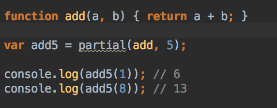
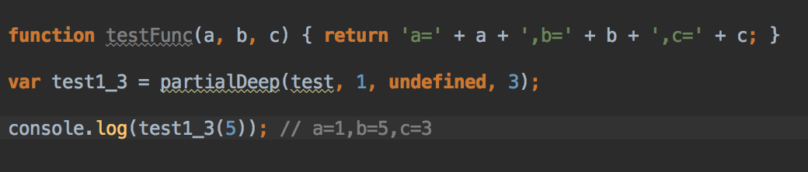

Занятие #17

Реализовать функцию partial(fn, a1, a2, ....), которая позволяет зафиксировать один или несколько аргументов функции.
Усовершенствовать partial, чтобы зафиксировать можно было любые аргументы
Некая сеть фастфудов предлагает несколько видов гамбургеров:
Маленький (50 лир, 40 калорий)
большой (100 лир, 60 калорий)
Гамбургер может быть с одним из нескольких видов начинок (обязательно):
сыром (+ 10 лир, + 20 калорий)
салатом (+ 20 лир, + 5 калорий)
картофелем (+ 15 лир, + 10 калорий)
Дополнительно, гамбургер можно посыпать приправой (+ 15 лир, 0 калорий) и полить майонезом (+ 20 лир, + 5 калорий).
Реализовать программу, расчиытвающую стоимость и калорийность гамбургера.
Взять за основу ООП подход (подсказка: нужен класс Гамбургер, константы, методы для выбора опций и рассчета нужных величин).
Написать jsDOC